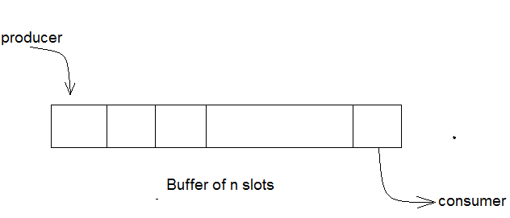

producer consumer problem, which is also called producer consumer problem, is one of the classic problems of synchronization. Let's start by understanding the problem here, before moving on to the solution and program code.
There is a buffer of n slots and each slot is capable of storing one unit of data. There are two processes running, namely, producer and consumer, which are operating on the buffer.

Producer consumer problem
A producer tries to insert data into an empty slot of the buffer. A consumer tries to remove data from a filled slot in the buffer. As you might have guessed by now, those two processes won't produce the expected output if they are being executed concurrently.
There needs to be a way to make the producer and consumer work in an independent manner.
One solution of this problem is to use semaphores. The semaphores which will be used here are:
m, a binary semaphore which is used to acquire and release the lock.empty, a counting semaphore whose initial value is the number of slots in the buffer, since, initially all slots are empty.full, a counting semaphore whose initial value is 0.At any instant, the current value of empty represents the number of empty slots in the buffer and full represents the number of occupied slots in the buffer.
The pseudocode of the producer function looks like this:
do
{
// wait until empty > 0 and then decrement 'empty'
wait(empty);
// acquire lock
wait(mutex);
/* perform the insert operation in a slot */
// release lock
signal(mutex);
// increment 'full'
signal(full);
}
while(TRUE)The pseudocode for the consumer function looks like this:
do
{
// wait until full > 0 and then decrement 'full'
wait(full);
// acquire the lock
wait(mutex);
/* perform the remove operation in a slot */
// release the lock
signal(mutex);
// increment 'empty'
signal(empty);
}
while(TRUE);Theory source : https://www.studytonight.com/